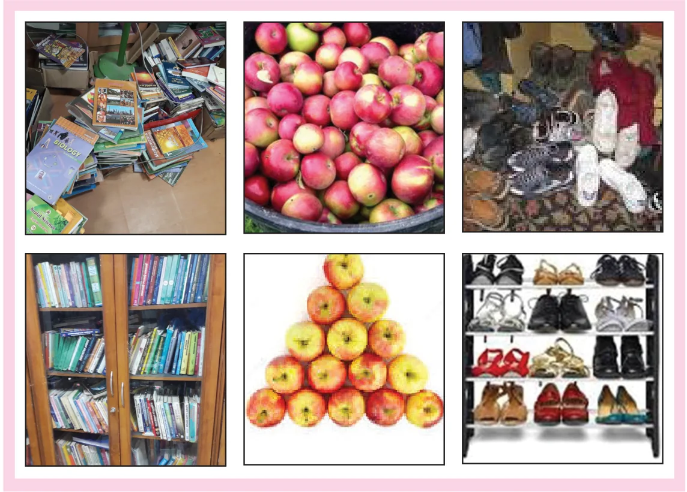
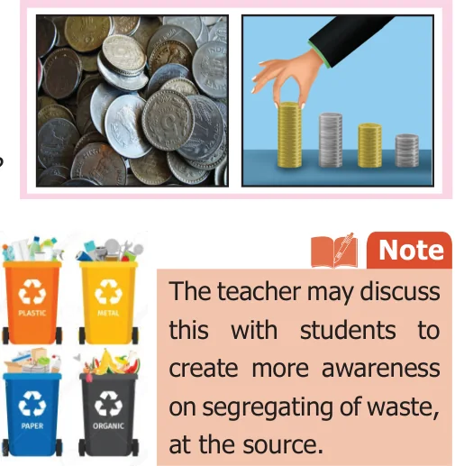
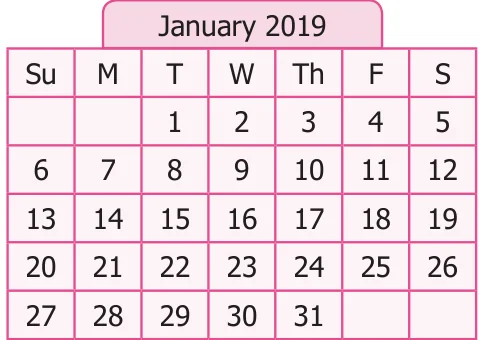

In day-to-day life, sorting things such as arranging books on shelves, lining up foot
wears in racks, segregating vegetables in trays, keeping household things in an almirah, arranging provisions in a cupboard, listing out expenditure etc, become inevitable. These activities help us to recall the things available, to have an easy access, avoid wastage and so on. Similar kind of arrangements are available in numbers also. Example : Calendar.

Discuss the following situations in groups
Situation 1
Suppose you need to arrange 100 books of same size in a shelf. The shelf has 10
rows and each row can accommodate 10 books. Besides, each book has an ID number written on it. How will you arrange the books based on their ID numbers, the smallest number should be on the left top row and the greatest ID number must on the right bottom row.
Discuss the following questions
- Are there different ways to arrange the books?
- How do you know that one method is better than the other?
- If two persons together do the arrangement, how will you divide the work between them?
- If the books do not have any numbers written on them, how will you arrange them?
- Is arranging them by number better than arranging them by size? why?
Situation 2
Suppose you have saved some coins in your piggy bank. If you want to know the amount saved, what can you do?

- What are the ways to count the amount?
- Which is the easy way to count?
- Can the coins be arranged by their value?
Situation 3
Have you seen the garbage being sorted out in the streets? Some materials are bio-degradable and some are not bio-degradable like hospital wastes, plastics, glass materials and other wastes. How are the garbages sorted?
Example 5 Observe the calendar showing the month of January 2019.

Answer the following questions
- Sort out the prime and composite numbers from the calendar.
- Sort out the odd and even numbers.
- Sort out the multiples of 6; multiples of 4; the common multiples of 4 and 6 and LCM of 4 and 6.
- Sort out the dates which fall on Monday.
Solution
- Prime numbers \(= 2\), 3, 5, 7, 11, 13, 17, 19, 23, 29, 31 Composite numbers \(= 4\), 6, 8, 9, 10, 12, 14, 15, 16, 18, 21, 22, 24, 25, 26, 27, 28, 30
- Odd numbers \(= 1\), 3, 5, 7, 9, 11, 13, 15, 17, 19, 21, 23, 25, 27, 29, 31 Even numbers \(= 2\), 4, 6, 8, 10, 12, 14, 16, 18, 20, 22, 24, 26, 28
- Multiplies of \(6 = 6\), 12, 18, 24, 30,
Multiplies of \(4 = 4\), 8, 12, 16, 20, 24, 28
Common multiples \(= 12\), 24
\(LCM = 12\)
- Monday falls on \(= 7,14,21,28\)
Information Processing ICT CORNER
Expected Outcome
Step 1 Step 2
Open the Browser by typing the URL Move the sliders to move Red point Link given below (or) Scan the QR vertically and horizontally along the Code. GeoGebra work sheet named numbers and check how Fibonacci "Information Processing" will open. sequence is formed. There is a worksheet under the title Fibonacci Sequence.
Step1 Step2
Browse in the link: